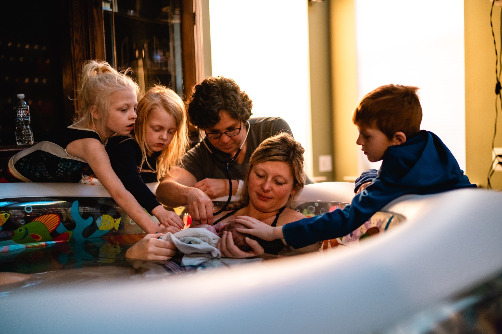

A Midwife Life
Home
A Soundbite
A Midwife's Bags
Due Date
Childbirth Education
Register
A homebirth can be a calm and gentle environment.

Picture taken by Michele Nizza of Mum's the Word.
A Baby is Born
Written and recorded by Michele Nizza, Licensed Midwife